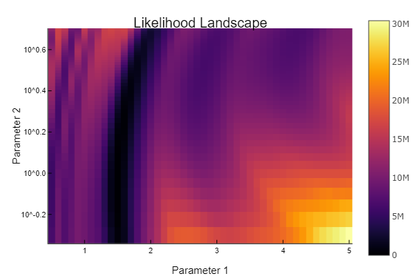
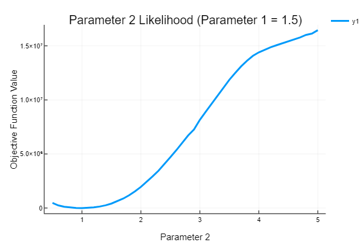

Generalized Likelihood Inference
In this example, we will demo the likelihood-based approach to parameter fitting. First, let's generate a dataset to fit. We will re-use the Lotka-Volterra equation, but in this case, fit just two parameters.
using DifferentialEquations, DiffEqParamEstim, Optimization, OptimizationBBO
using SciMLLogging: None
f1 = function (du, u, p, t)
du[1] = p[1] * u[1] - p[2] * u[1] * u[2]
du[2] = -3.0 * u[2] + u[1] * u[2]
end
p = [1.5, 1.0]
u0 = [1.0; 1.0]
tspan = (0.0, 10.0)
prob1 = ODEProblem(f1, u0, tspan, p)
sol = solve(prob1, Tsit5())retcode: Success
Interpolation: specialized 4th order "free" interpolation
t: 34-element Vector{Float64}:
0.0
0.0776084743154256
0.2326451370670694
0.42911851563726466
0.679082199936808
0.9444046279774128
1.2674601918628516
1.61929140093895
1.9869755481702074
2.2640903679981617
⋮
7.5848624442719235
7.978067891667038
8.483164641366145
8.719247691882519
8.949206449510513
9.200184762926114
9.438028551201125
9.711807820573478
10.0
u: 34-element Vector{Vector{Float64}}:
[1.0, 1.0]
[1.0454942346944578, 0.8576684823217127]
[1.1758715885890039, 0.6394595702308833]
[1.4196809580265157, 0.456996261440507]
[1.876719397626222, 0.32473342884607376]
[2.5882501035146124, 0.26336255403957287]
[3.86070908479701, 0.27944581878759067]
[5.750813064347344, 0.5220073551361064]
[6.814978696356639, 1.9177834056716259]
[4.392997771045281, 4.194671543390715]
⋮
[2.614251082502646, 0.26416954350041094]
[4.241070648057705, 0.3051232653305123]
[6.791121825691655, 1.1345253835487776]
[6.2653749402951835, 2.741688595595249]
[3.7807688120522114, 4.431164521488329]
[1.8164214705303103, 4.064057991958692]
[1.1465028256357626, 2.7911730348239576]
[0.9557986528530791, 1.6235633163407794]
[1.0337581330572256, 0.9063703732076024]This is a function with two parameters, [1.5,1.0] which generates the same ODE solution as before. This time, let's generate 100 datasets where at each point adds a little bit of randomness:
using RecursiveArrayTools # for VectorOfArray
t = collect(range(0, stop = 10, length = 200))
function generate_data(sol, t)
randomized = VectorOfArray([(sol(t[i]) + 0.01randn(2)) for i in 1:length(t)])
data = convert(Array, randomized)
end
aggregate_data = convert(Array, VectorOfArray([generate_data(sol, t) for i in 1:100]))2×200×100 Array{Float64, 3}:
[:, :, 1] =
1.00636 1.02537 1.06384 1.09733 … 0.981289 1.00777 1.06545
0.998886 0.924641 0.826789 0.760358 1.09417 0.991289 0.911997
[:, :, 2] =
1.00465 1.02716 1.06786 1.0981 … 0.981942 1.01537 1.03457
0.997708 0.927142 0.813163 0.741898 1.11594 1.00359 0.906916
[:, :, 3] =
0.993249 1.01478 1.06579 1.09637 … 0.979091 1.0038 1.02345
0.996886 0.921273 0.824621 0.762897 1.11307 0.99484 0.912315
;;; …
[:, :, 98] =
1.00258 1.05847 1.06473 1.10132 … 0.982248 1.01792 1.04283
0.981274 0.899901 0.807848 0.736048 1.1057 1.00917 0.902581
[:, :, 99] =
0.991247 1.02763 1.05338 1.10204 … 0.972002 1.00689 1.01062
1.00076 0.900053 0.816182 0.757844 1.10215 1.01393 0.920836
[:, :, 100] =
0.992178 1.02989 1.06031 1.12655 … 0.97955 1.01079 1.03668
0.988754 0.909757 0.839456 0.742235 1.11013 0.999501 0.892962here, with t we measure the solution at 200 evenly spaced points. Thus, aggregate_data is a 2x200x100 matrix where aggregate_data[i,j,k] is the ith component at time j of the kth dataset. What we first want to do is get a matrix of distributions where distributions[i,j] is the likelihood of component i at take j. We can do this via fit_mle on a chosen distributional form. For simplicity, we choose the Normal distribution. aggregate_data[i,j,:] is the array of points at the given component and time, and thus we find the distribution parameters which fits best at each time point via:
using Distributions
distributions = [fit_mle(Normal, aggregate_data[i, j, :]) for i in 1:2, j in 1:200]2×200 Matrix{Distributions.Normal{Float64}}:
Distributions.Normal{Float64}(μ=0.998138, σ=0.010142) … Distributions.Normal{Float64}(μ=1.03308, σ=0.0101491)
Distributions.Normal{Float64}(μ=1.00089, σ=0.00961074) Distributions.Normal{Float64}(μ=0.907367, σ=0.0114224)Notice for example that we have:
distributions[1, 1]Distributions.Normal{Float64}(μ=0.9981381673423381, σ=0.010141991357855)that is, it fits the distribution to have its mean just about where our original solution was, and the variance is about how much noise we added to the dataset. This is a good check to see that the distributions we are trying to fit our parameters to makes sense.
Note that in this case the Normal distribution was a good choice, and often it's a nice go-to choice, but one should experiment with other choices of distributions as well. For example, a TDist can be an interesting way to incorporate robustness to outliers since low degrees of free T-distributions act like Normal distributions but with longer tails (though fit_mle does not work with a T-distribution, you can get the means/variances and build appropriate distribution objects yourself).
Once we have the matrix of distributions, we can build the objective function corresponding to that distribution fit:
obj = build_loss_objective(prob1, Tsit5(), LogLikeLoss(t, distributions),
maxiters = 10000, verbose = None())SciMLBase.OptimizationFunction{true, SciMLBase.NoAD, DiffEqParamEstim.var"#37#38"{Nothing, typeof(DiffEqParamEstim.STANDARD_PROB_GENERATOR), Base.Pairs{Symbol, Any, Nothing, @NamedTuple{maxiters::Int64, verbose::SciMLLogging.None}}, SciMLBase.ODEProblem{Vector{Float64}, Tuple{Float64, Float64}, true, Vector{Float64}, SciMLBase.ODEFunction{true, SciMLBase.AutoSpecialize, Main.var"#2#3", LinearAlgebra.UniformScaling{Bool}, Nothing, Nothing, Nothing, Nothing, Nothing, Nothing, Nothing, Nothing, Nothing, Nothing, Nothing, Nothing, typeof(SciMLBase.DEFAULT_OBSERVED), Nothing, Nothing, Nothing, Nothing}, Base.Pairs{Symbol, Union{}, Nothing, @NamedTuple{}}, SciMLBase.StandardODEProblem}, OrdinaryDiffEqTsit5.Tsit5{typeof(OrdinaryDiffEqCore.trivial_limiter!), typeof(OrdinaryDiffEqCore.trivial_limiter!), FastBroadcast.Serial}, LogLikeLoss{Vector{Float64}, Matrix{Distributions.Normal{Float64}}}, Nothing, Tuple{}}, Nothing, Nothing, Nothing, Nothing, Nothing, Nothing, Nothing, Nothing, Nothing, Nothing, Nothing, Nothing, Nothing, typeof(SciMLBase.DEFAULT_OBSERVED_NO_TIME), Nothing, Nothing, Nothing, Nothing, Nothing, Nothing, Nothing, Nothing, Nothing, Nothing}(DiffEqParamEstim.var"#37#38"{Nothing, typeof(DiffEqParamEstim.STANDARD_PROB_GENERATOR), Base.Pairs{Symbol, Any, Nothing, @NamedTuple{maxiters::Int64, verbose::SciMLLogging.None}}, SciMLBase.ODEProblem{Vector{Float64}, Tuple{Float64, Float64}, true, Vector{Float64}, SciMLBase.ODEFunction{true, SciMLBase.AutoSpecialize, Main.var"#2#3", LinearAlgebra.UniformScaling{Bool}, Nothing, Nothing, Nothing, Nothing, Nothing, Nothing, Nothing, Nothing, Nothing, Nothing, Nothing, Nothing, typeof(SciMLBase.DEFAULT_OBSERVED), Nothing, Nothing, Nothing, Nothing}, Base.Pairs{Symbol, Union{}, Nothing, @NamedTuple{}}, SciMLBase.StandardODEProblem}, OrdinaryDiffEqTsit5.Tsit5{typeof(OrdinaryDiffEqCore.trivial_limiter!), typeof(OrdinaryDiffEqCore.trivial_limiter!), FastBroadcast.Serial}, LogLikeLoss{Vector{Float64}, Matrix{Distributions.Normal{Float64}}}, Nothing, Tuple{}}(nothing, DiffEqParamEstim.STANDARD_PROB_GENERATOR, Base.Pairs{Symbol, Any, Nothing, @NamedTuple{maxiters::Int64, verbose::SciMLLogging.None}}(:maxiters => 10000, :verbose => SciMLLogging.None()), SciMLBase.ODEProblem{Vector{Float64}, Tuple{Float64, Float64}, true, Vector{Float64}, SciMLBase.ODEFunction{true, SciMLBase.AutoSpecialize, Main.var"#2#3", LinearAlgebra.UniformScaling{Bool}, Nothing, Nothing, Nothing, Nothing, Nothing, Nothing, Nothing, Nothing, Nothing, Nothing, Nothing, Nothing, typeof(SciMLBase.DEFAULT_OBSERVED), Nothing, Nothing, Nothing, Nothing}, Base.Pairs{Symbol, Union{}, Nothing, @NamedTuple{}}, SciMLBase.StandardODEProblem}(SciMLBase.ODEFunction{true, SciMLBase.AutoSpecialize, Main.var"#2#3", LinearAlgebra.UniformScaling{Bool}, Nothing, Nothing, Nothing, Nothing, Nothing, Nothing, Nothing, Nothing, Nothing, Nothing, Nothing, Nothing, typeof(SciMLBase.DEFAULT_OBSERVED), Nothing, Nothing, Nothing, Nothing}(Main.var"#2#3"(), LinearAlgebra.UniformScaling{Bool}(true), nothing, nothing, nothing, nothing, nothing, nothing, nothing, nothing, nothing, nothing, nothing, nothing, SciMLBase.DEFAULT_OBSERVED, nothing, nothing, nothing, nothing), [1.0, 1.0], (0.0, 10.0), [1.5, 1.0], Base.Pairs{Symbol, Union{}, Nothing, @NamedTuple{}}(), SciMLBase.StandardODEProblem()), OrdinaryDiffEqTsit5.Tsit5{typeof(OrdinaryDiffEqCore.trivial_limiter!), typeof(OrdinaryDiffEqCore.trivial_limiter!), FastBroadcast.Serial}(OrdinaryDiffEqCore.trivial_limiter!, OrdinaryDiffEqCore.trivial_limiter!, FastBroadcast.Serial()), LogLikeLoss{Vector{Float64}, Matrix{Distributions.Normal{Float64}}}([0.0, 0.05025125628140704, 0.10050251256281408, 0.1507537688442211, 0.20100502512562815, 0.25125628140703515, 0.3015075376884422, 0.35175879396984927, 0.4020100502512563, 0.45226130653266333 … 9.547738693467336, 9.597989949748744, 9.64824120603015, 9.698492462311558, 9.748743718592964, 9.798994974874372, 9.849246231155778, 9.899497487437186, 9.949748743718592, 10.0], Distributions.Normal{Float64}[Distributions.Normal{Float64}(μ=0.9981381673423381, σ=0.010141991357855) Distributions.Normal{Float64}(μ=1.028799495437041, σ=0.010152628415196659) … Distributions.Normal{Float64}(μ=1.005055706664738, σ=0.010473401120682409) Distributions.Normal{Float64}(μ=1.0330761392603187, σ=0.010149053961890262); Distributions.Normal{Float64}(μ=1.0008886595921522, σ=0.009610742873022243) Distributions.Normal{Float64}(μ=0.9045977224819363, σ=0.011008339817301895) … Distributions.Normal{Float64}(μ=1.002808267891109, σ=0.009331008016967091) Distributions.Normal{Float64}(μ=0.9073666734953878, σ=0.011422392387381032)], nothing, nothing), nothing, ()), SciMLBase.NoAD(), nothing, nothing, nothing, nothing, nothing, nothing, nothing, nothing, nothing, nothing, nothing, nothing, nothing, SciMLBase.DEFAULT_OBSERVED_NO_TIME, nothing, nothing, nothing, nothing, nothing, nothing, nothing, nothing, nothing, nothing)First, let's use the objective function to plot the likelihood landscape:
using Plots;
plotly();
prange = 0.5:0.1:5.0
heatmap(prange, prange, [obj([j, i]) for i in prange, j in prange],
yscale = :log10, xlabel = "Parameter 1", ylabel = "Parameter 2",
title = "Likelihood Landscape")
Recall that this is the negative log-likelihood, and thus the minimum is the maximum of the likelihood. There is a clear valley where the first parameter is 1.5, while the second parameter's likelihood is more muddled. By taking a one-dimensional slice:
plot(prange, [obj([1.5, i]) for i in prange], lw = 3,
title = "Parameter 2 Likelihood (Parameter 1 = 1.5)",
xlabel = "Parameter 2", ylabel = "Objective Function Value")
we can see that there's still a clear minimum at the true value. Thus, we will use the global optimizers from BlackBoxOptim.jl to find the values. We set our search range to be from 0.5 to 5.0 for both of the parameters and let it optimize:
bound1 = Tuple{Float64, Float64}[(0.5, 5), (0.5, 5)]
optprob = OptimizationProblem(obj, [2.0, 2.0], lb = first.(bound1), ub = last.(bound1))OptimizationProblem. In-place: true
u0: 2-element Vector{Float64}:
2.0
2.0This shows that it found the true parameters as the best fit to the likelihood.